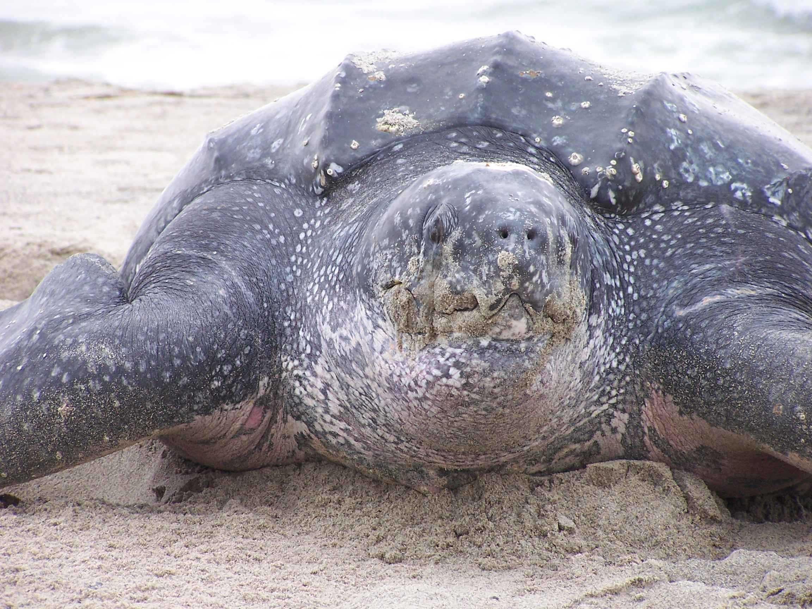

La tortuga laúd es la tortuga marina más grande del mundo: puede llegar a pesar más de 500 kg. En México anida principalmente en playas del Pacífico, como Mexiquillo e Ixtapilla, en Michoacán, y también en Oaxaca. Se encuentra en peligro crítico de extinción, ya que sus poblaciones en el Pacífico mexicano cayeron drásticamente desde la década de 1980.